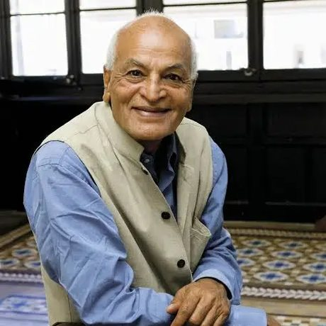
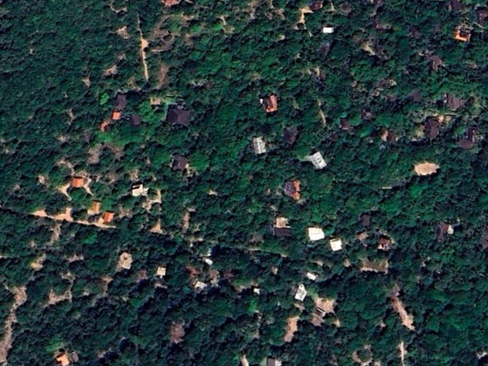
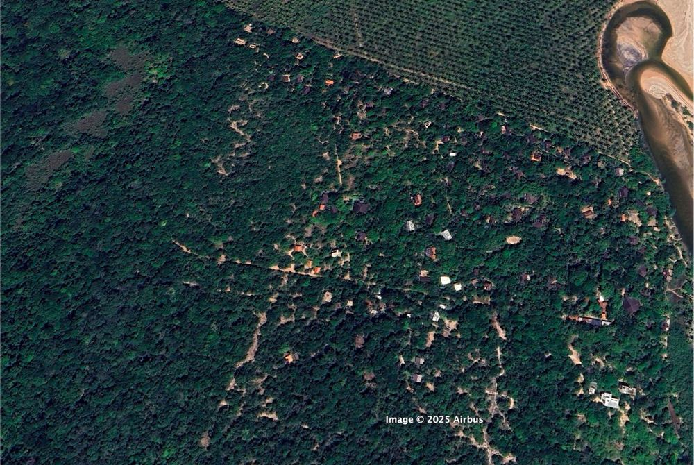
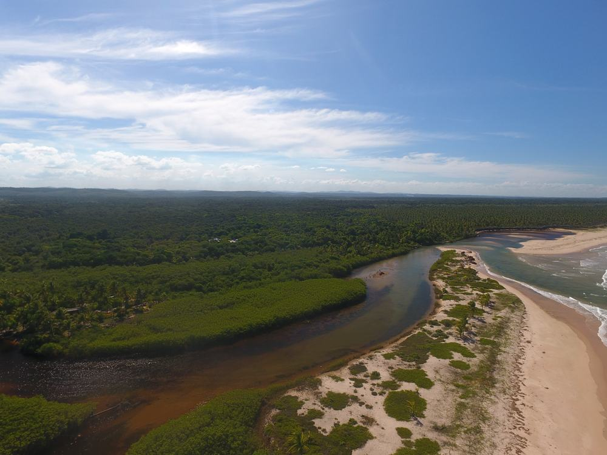
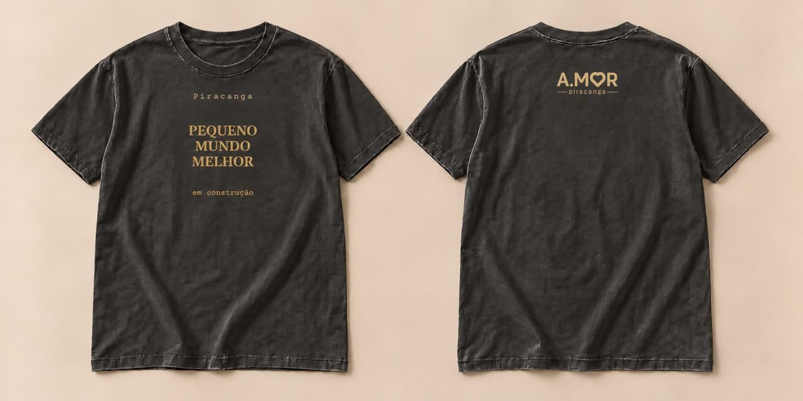

um movimento de pessoas
Moradores, visitantes e comunidades construindo juntos territórios vivos, onde o cuidado com as pessoas, com a Água e com a floresta se pratica todos os dias.
em construçãopor que existimos
Nunca soubemos tanto. E, ainda assim, ecossistemas degradam, a solidão cresce e a confiança enfraquece. Sabemos mais do que nunca, e parecemos cuidar cada vez menos.
Acreditamos que o cuidado não é um sentimento. É uma prática. E toda prática pode ser aprendida. Comunidades podem aprender, continuamente, a cuidar melhor de si, umas das outras e dos sistemas vivos que sustentam a vida.
Por isso este movimento não tem dono nem centro. Ele é feito de muitas mãos: quem planta, quem ensina, quem acolhe, quem limpa a praia, quem cuida da Água, quem visita e retribui. Um sistema descentralizado de cuidado, como a própria vida.
nossa linhagem
Caminhamos numa linhagem antiga: a de quem acredita que a escala humana é a escala da vida. E. F. Schumacher nos lembrou que a economia deve servir às pessoas. Satish Kumar ensina há décadas que a regeneração começa pelo solo, pela alma e pela sociedade.
“O ser humano é pequeno e, por isso, o pequeno é belo. Buscar o gigantismo é buscar a autodestruição.”
E. F. Schumacher · Small Is Beautiful (1973)

“Solo, Alma, Sociedade: cuidar da terra, de si e dos outros é um único gesto.”
Satish Kumar · Soil, Soul, Society (paráfrase)
como cuidamos
01 / campos de cuidado
Mutirões, cuidado da Água e dos resíduos, refeições partilhadas, círculos de governança. O cuidado transforma espaço em lugar, e lugar em lar.
02 / universidade viva
O território é a escola. Moradores e visitantes ensinam e aprendem fazendo, e a comunidade inteira aprende a aprender, geração após geração.
03 / inteligência viva
Censo comunitário, mapas e indicadores devolvem ao território a percepção de si mesmo, para que as decisões nasçam do coletivo, com dados e transparência.
“Cuido deste lugar porque este lugar cuida de mim.”
onde há cuidado, nasce pertencimento
sonhar grande, começar pequeno
Um pequeno mundo melhor não nasce de um plano. Nasce de um gesto que se expande: da casa para a vila, da vila para a bacia hidrográfica. O primeiro território é a bacia do Rio Piracanga, em Maraú, Bahia. Mais especificamente, começamos o trabalho na vila de Piracanga, onde uma fazenda de cocos abandonada voltou a ser floresta em 20 anos de cuidado comunitário.
casa >> vila >> bacia

01 · a casa
Tudo começa no pequeno: na casa que acolhe, na comida partilhada, no quintal que vira pomar.

02 · a vila
Quando as casas se cuidam entre si, nasce a vila: escola, mutirão, festa, governança, floresta de volta.

03 · a bacia
A Água conecta tudo: nascente, rio, mangue e mar. Vilas vizinhas se unem, e o cuidado se expande para a bacia inteira.
vista o movimento
Todo pequeno mundo melhor está sempre em construção. A campanha leva essa mensagem para as ruas, e cada camiseta sustenta o Fundo Socioambiental do território.
